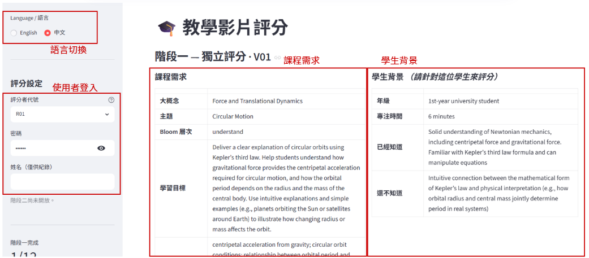
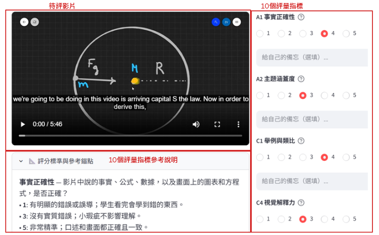
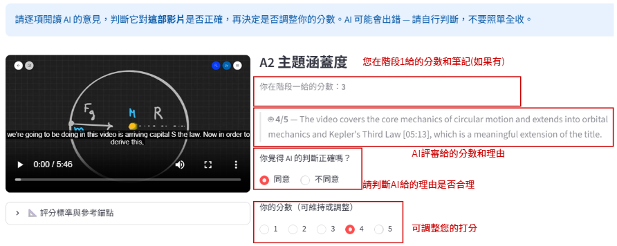

謝謝你來幫忙！這份文件會把流程、指標、操作方式講清楚，讀完大概五分鐘。
簡單說：我們做了一批 AI 生成的教學影片，想知道它們教得好不好。你會看 12 部短片（物理、生物、數學、電腦科學都有），然後幫每部片打分數。
這件事沒有標準答案，我們就是需要你的真實看法。
每部影片旁邊都會附兩樣東西：課程需求（這堂課本來要教什麼）和學生背景（目標學生幾年級、已經懂什麼、還不懂什麼）。打分數的時候請想：「如果我是這個學生，看這部片能不能學到東西？」
| 階段 | 做什麼 | 大概要多久 |
|---|---|---|
| 1 自己先評 | 看片、讀背景、10 個指標各打 1-5 分 | 約 120 分鐘 |
| 2 對標準 | 跟其他人一起討論幾部片，把打分尺度拉齊 | 約 60 分鐘 |
| 3 看 AI 意見 | 讀 AI 的分析，決定要不要改分數 | 約 90 分鐘 |
每部片要評 10 項，都是 1-5 分。分成四大類：
拿不準的話，介面左邊可以展開「評分標準與參考錨點」，裡面有 1、3、5 分各長什麼樣的描述。
左邊欄選你的代號（R01-R10，主持人會告訴你），打密碼(會透過email寄送)、填名字就好。一開始只有階段一可以用，階段二要等大家討論完才會開。
影片上面有課程需求和學生背景兩張表，花一分鐘讀一下再開始看片。知道這個學生是誰，打分才有依據。
左邊播影片（有英文字幕可以開），右邊是打分的地方。建議先完整看一遍再打分，邊看邊打也行。
10 個指標一個一個選 1-5 分。每個指標下面有一格可以打字，隨手記一下為什麼給這個分數，到了階段二會跳出來提醒你。這格不是必填，但寫了之後階段二會輕鬆不少。打的過程中系統會自動幫你暫存，就算不小心關掉頁面也不會不見。
10 項都填好以後，按一下「完成，下一部」，這部片才算正式交出去（左邊會出現 ✅）。接著系統會自動跳到下一部，12 部做完就結束。


這一次大家會一起（線上或現場）看 2-3 部片的打分結果，聊一下：
討論完之後主持人會把階段二打開，你就可以在左邊欄切過去了。
每個指標底下會多一段 AI 的分析，長得像這樣：
🤖 3/5 -- The video is a pure mathematical derivation with no analogies or concrete examples to build physical intuition.
有些還會標時間點，方便你回去看那個段落。
每一項選「同意」或「不同意」。旁邊會列出你階段一打的分數，還有你當時寫的備忘（如果有的話），讓你快速回想。
你可以維持原本的分數，也可以改。完全看你自己，沒有人會因為你改了或沒改而怎樣。
跟階段一一樣，10 項做完按「完成，下一部」，做完 12 部就全部結束了。

有問題在 Line 群裡問就好。再次感謝！